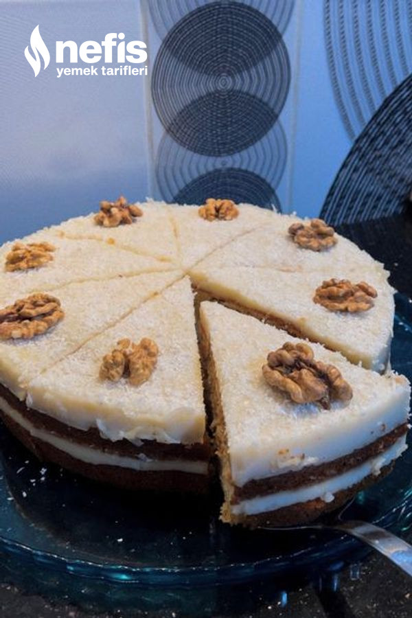
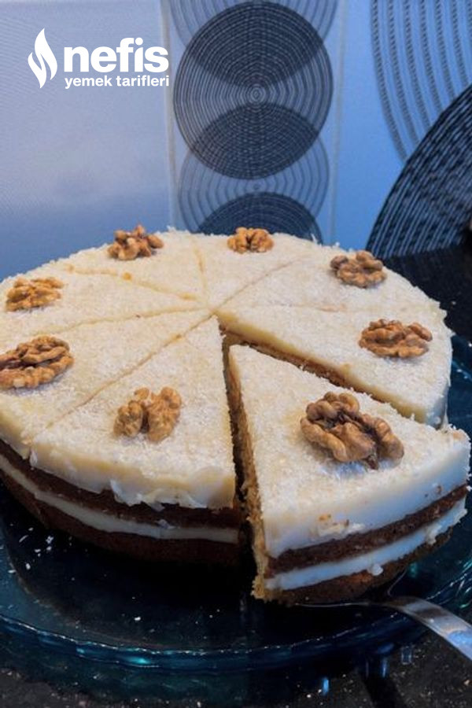
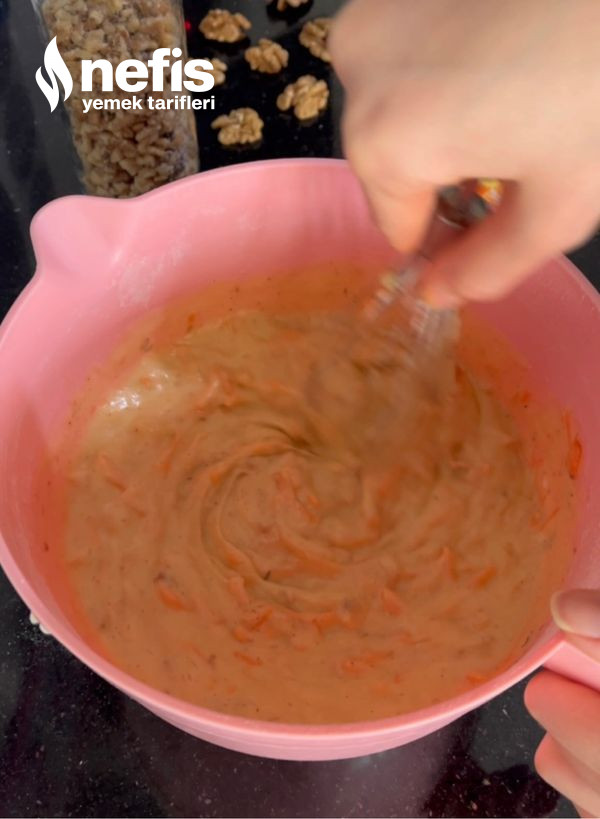
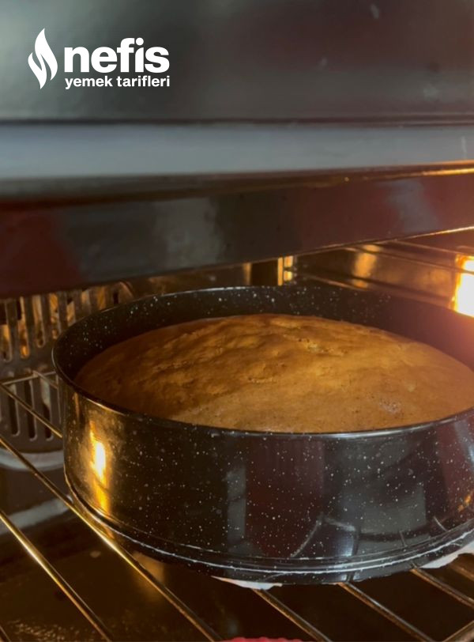

HAVUÇLU CEVİZLİ PASTA TARİFİ

HAVUÇLU CEVİZLİ PASTA TARİFİ

Havuçlu Cevizli Pasta Tarifi İçin Malzemeler
Kaç Kişilik: 4 Hazırlama süresi: 30 dk Pişirme süresi: 30dk
Keki için;
Kreması için;
Üzeri için;
Havuçlu Cevizli Pasta Tarifi Nasıl Yapılır?
Havuçlu Cevizli Pasta Tarifi Fotoğraflı Yapılışı
 